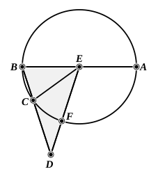
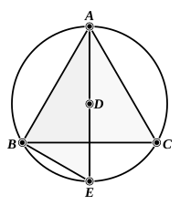
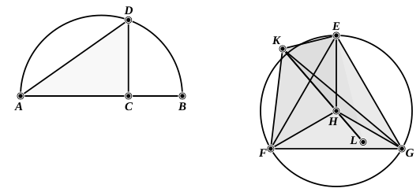
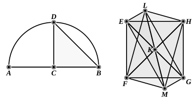

BOOK XIII. PROPOSITIONS.¶

If the side of the hexagon and that of the decagon inscribed in the same circle be added together, the whole straight line has been cut in extreme and mean ratio, and its greater segment is the side of the hexagon.

If an :term:`equilateral triangle <equilateral-triangle>` be :term:`inscribed in a circle <inscribed-in-circle>`, the :term:`square <square>` on the side of the :term:`triangle <trilateral>` is triple of the square on the radius of the :term:`circle <circle>`.

To construct a :term:`pyramid <pyramid>`, to comprehend it in a given :term:`sphere <sphere>`, and to prove that the :term:`square <square>` on the :term:`diameter of the sphere <diameter-of-sphere>` is one and a half times the square on the side of the pyramid.

To construct an octahedron and comprehend it in a sphere, as in the preceding case; and to prove that the square on the diameter of the sphere is double of the square on the side of the octahedron.